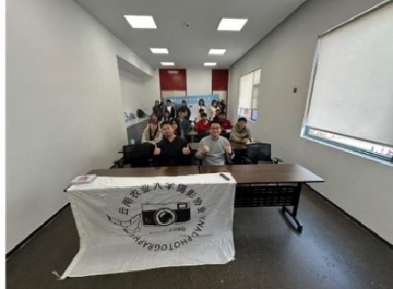

宣传部
为协会平时的活动开展宣传工作。
让故事先被看见
01 / 协会简介
记录、观察、分享，让普通日常拥有被看见的意义。
摄影社团是面向学校热爱光影艺术的学生们搭建的兴趣平台。社团零基础友好，无需专业相机，手机也可以参与学习。日常系统讲解构图、光影、调色和拍摄技巧，定期组织校园采风、人物外拍、风景研学及摄影作品展示等活动。
在这里，成员分享拍摄思路，交流修图心得，用镜头捕捉校园风光、生活温情和世间百态。社团鼓励成员大胆表达自我，以影像记录成长，定格平时的温情。
未来，摄影社团将持续丰富活动，打造更完整的学习体系。
02 / 团队分工
分工协作，将灵感落成一次次有温度的校园活动。
为协会平时的活动开展宣传工作。
让故事先被看见为协会活动做策划工作，确保活动顺利开展。
让想法成为现场在协会活动开展时确保现场秩序有序。
让相聚井然有序03 / 精彩活动
从赛事、外拍到沙龙和展览，摄影让校园内外的目光彼此相遇。
面向全校师生摄影爱好者，仅限使用 vivo 手机拍摄的作品参赛。
面向摄影社团成员和其他学校社团成员开展，仅限使用 vivo 手机拍摄。
面向社团成员开展尼康拍摄技巧分享。
面向社团成员开展，欣赏博士摄影作品。
04 / 精彩瞬间
按下快门，留下每一个专注的背影、一次相聚和一座城市的夜晚。
05 / 荣誉墙
每一次用心组织、每一个认真按下快门的瞬间，最终共同汇成这份认可。